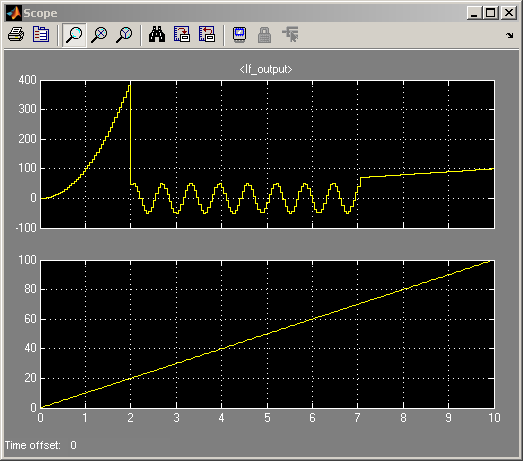
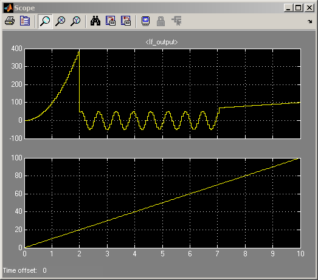

IF Statement
With the use of flow charts, Stateflow® allows you to create C-Code or M-Code statements such as the IF - ELSE statement. This particular demo shows how you can create a simple IF - ELSE statement in Stateflow. The equivalent statement in MATLAB® is as follows:
if condition <= 20 If_output = condition^2; elseif condition > 20 & condition <= 50 If_output = 50*sin(condition); else If_output = condition; end
 
